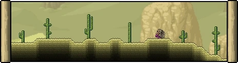
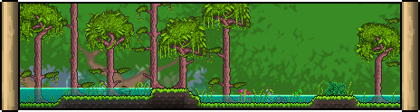

| Biomas |
Descripcion |
Imagenes |
| Selva |
Está conformado por lodo, césped selvático y árboles de caoba. Debajo se encuentra la selva subterránea. Los enemigos son bastante fuertes. |
 |
| Desierto |
El desierto es un bioma conformado principalmente de arena y cactus. Suele aparecer de un lado del bosque central. Debajo de este se encuentra el desierto subterráneo. |
 |
| Tundra |
La tundra es un bioma de nieve que se encuentra cerca del bosque central, del lado de la mazmorra. Se compone de bloques de nieve, hielo y árboles boreales y en vez de llover, nieva. |
 |
| Bosque |
El bosque es el bioma principal en el cual siempre aparece el jugador al comenzar un mundo. Está conformado por tierra y césped, con plantas y árboles. |
 |